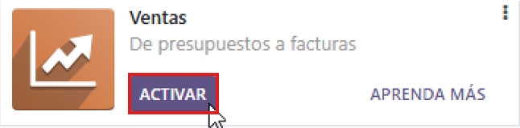

Módulos instalados:
Módulo ventas

Módulo CRM
1.Módulo Ventas:
Justificación:
El módulo Ventas es imprescindible para cualquier empresa que comercialice productos o servicios. Permite gestionar todo el proceso de venta, desde la elaboración de presupuestos hasta la emisión de pedidos y facturas. Lo hemos elegido porque una pyme necesita controlar sus ventas de forma organizada, tener un registro claro de clientes, productos, precios y entregas. Este módulo centraliza toda esa información, mejorando la eficiencia y reduciendo errores administrativos.
Características:
- Creación de presupuestos y pedidos fácilmente.
- Gestión de clientes, productos y precios desde una sola vista.
- Conversión automática de presupuestos en pedidos y facturas.
- Conexión directa con contabilidad e inventario.
- Historial de transacciones y precios por cliente.
- Compatible con el módulo CRM para seguimiento de clientes.
Funcionamiento paso a paso:
- Acceder al módulo Ventas desde el panel principal: 
- Crear un presupuesto:
- Añadir cliente:
- Añadir productos:
- Enviar presupuesto al cliente:
- Convertir presupuesto en pedido:
- Generar la factura:
- Ver factura emitida:
- Resultado final de la facturación:
Entramos desde el panel de aplicaciones en "Ventas".
Haz clic en "Presupuestos" y luego en "Crear" para generar uno nuevo.
Seleccionamos un cliente o lo creamos directamente desde el formulario.
Agregamos productos, ajustamos precios, cantidades o descuentos.
Podemos enviarlo en PDF o por correo electrónico al cliente.
Con un clic, convertimos el presupuesto aceptado en un pedido de venta.
Desde el pedido generado, creamos la factura automáticamente.
Aquí vemos el presupuesto convertido en factura para el cliente.
Así se visualiza la factura definitiva con todos los datos generados.
2.Módulo CRM:
Justificación:
Hemos elegido este módulo porque facilita el trabajo del equipo comercial, ayuda a gestionar relaciones con clientes potenciales y mejora la conversión de clientes en clientes reales, algo fundamental para el crecimiento de cualquier negocio.
Características:
- Gestión de leads (clientes potenciales).
- Seguimiento de oportunidades.
- Planificación de llamadas, emails y reuniones.
- Visualización en tablero Kanban con etapas.
- Integración con calendario, correo electrónico y otras apps de Odoo.
Funcionamiento paso a paso:
- Entrar en el módulo CRM desde el menú superior tras instalarlo:
- Crear un lead o una oportunidad con datos del cliente:
- Definir la etapa (nuevo, propuesta, negociación...):
- Cambiar de columna la oportunidad:
- Añadir actividades: llamada, email o reunión:
- Convertir la oportunidad en "Ganado" si es aceptada:
- Tablero Kanban después de ganar una oportunidad:
Para ello entramos desde los cuadrados arriba a la izquierda > "CRM" y listo.
Para crear una oportunidad o un lead, es muy sencillo arriba a mano izquierda hacemos clic en "Nuevo".

Rellenamos los campos con lo que queramos crear, en este caso será una venta a un cliente y una vez creada le damos a "Añadir".

Como podemos ver nos aparece en la columna "Nuevo", pero si lo deseamos podemos cambiarlo de columna arrastrando la oportunidad.

Así podemos ver cómo nuestra oportunidad ha sido movida a la columna de "Propuestas".
Para añadir actividades a nuestra oportunidad, debemos entrar en ella haciendo clic y luego hacer clic en "Actividades".
En "Tipo de actividad", creamos la que deseemos, en nuestro caso reunión, añadimos un comentario y pulsamos "Hecho y programar siguiente".
Aquí podemos ver cómo quedaría nuestra nueva actividad en el panel derecho.
Si hemos ganado la oportunidad, debemos marcar la casilla "Ganado", que se encuentra en el panel izquierdo.

Finalmente, así quedaría nuestro tablero una vez hemos ganado la oportunidad.